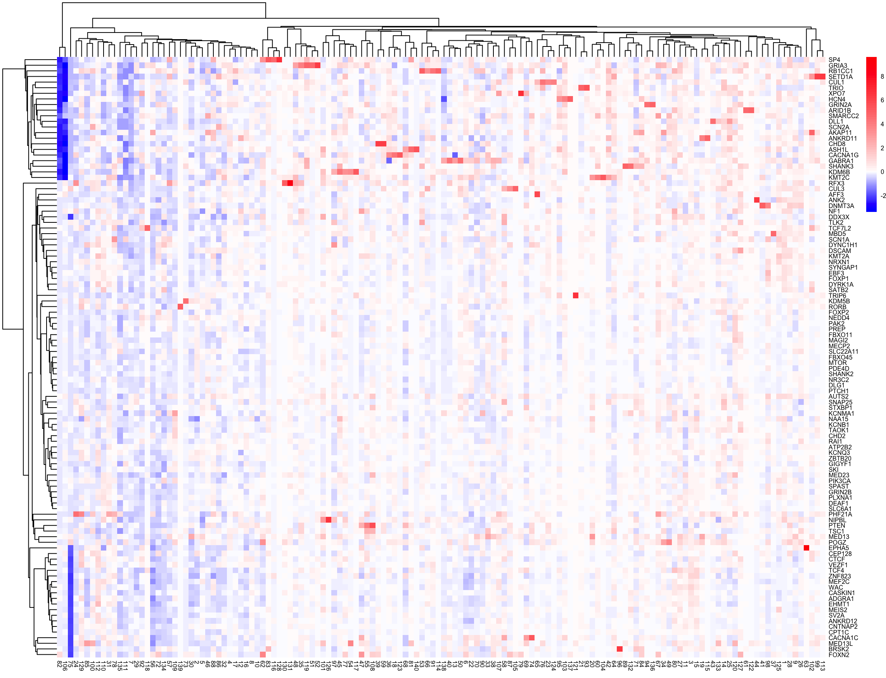
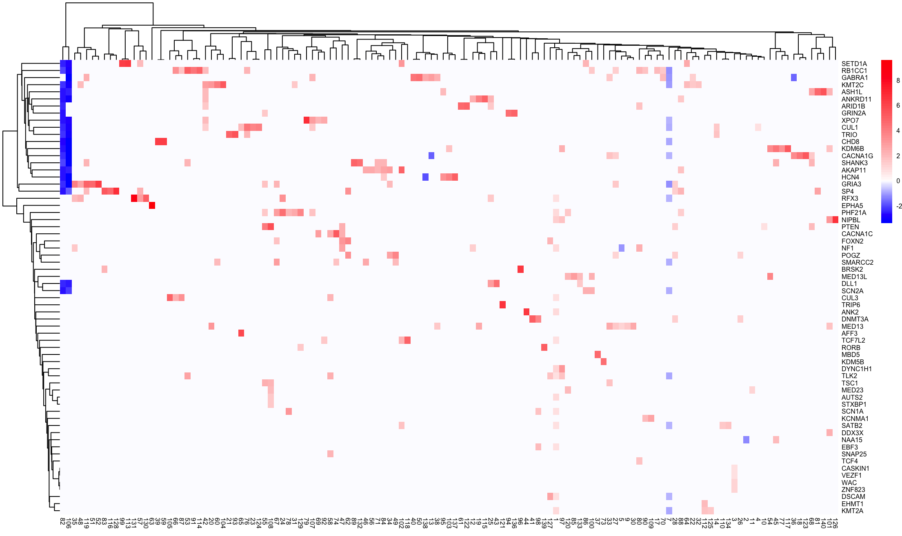

Last updated: 2026-07-01
Checks: 7 0
Knit directory: data_analysis/
This reproducible R Markdown analysis was created with workflowr (version 1.7.2). The Checks tab describes the reproducibility checks that were applied when the results were created. The Past versions tab lists the development history.
Great! Since the R Markdown file has been committed to the Git repository, you know the exact version of the code that produced these results.
Great job! The global environment was empty. Objects defined in the global environment can affect the analysis in your R Markdown file in unknown ways. For reproduciblity it’s best to always run the code in an empty environment.
The command set.seed(20260612) was run prior to running
the code in the R Markdown file. Setting a seed ensures that any results
that rely on randomness, e.g. subsampling or permutations, are
reproducible.
Great job! Recording the operating system, R version, and package versions is critical for reproducibility.
Nice! There were no cached chunks for this analysis, so you can be confident that you successfully produced the results during this run.
Great job! Using relative paths to the files within your workflowr project makes it easier to run your code on other machines.
Great! You are using Git for version control. Tracking code development and connecting the code version to the results is critical for reproducibility.
The results in this page were generated with repository version 7a63422. See the Past versions tab to see a history of the changes made to the R Markdown and HTML files.
Note that you need to be careful to ensure that all relevant files for
the analysis have been committed to Git prior to generating the results
(you can use wflow_publish or
wflow_git_commit). workflowr only checks the R Markdown
file, but you know if there are other scripts or data files that it
depends on. Below is the status of the Git repository when the results
were generated:
Ignored files:
Ignored: .DS_Store
Ignored: data/.DS_Store
Note that any generated files, e.g. HTML, png, CSS, etc., are not included in this status report because it is ok for generated content to have uncommitted changes.
These are the previous versions of the repository in which changes were
made to the R Markdown (analysis/minnd_gene_program.Rmd)
and HTML (docs/minnd_gene_program.html) files. If you’ve
configured a remote Git repository (see ?wflow_git_remote),
click on the hyperlinks in the table below to view the files as they
were in that past version.
| File | Version | Author | Date | Message |
|---|---|---|---|---|
| Rmd | 7a63422 | Lifan Liang | 2026-07-01 | wflow_publish(c("analysis", "docs", "data")) |
| html | 7a63422 | Lifan Liang | 2026-07-01 | wflow_publish(c("analysis", "docs", "data")) |
| html | 9c953b9 | Lifan Liang | 2026-06-30 | Build site. |
| Rmd | 006fbd0 | Lifan Liang | 2026-06-30 | wflow_publish(c("analysis", "docs", "data")) |
| html | 006fbd0 | Lifan Liang | 2026-06-30 | wflow_publish(c("analysis", "docs", "data")) |
We obtained the pseudobulk sample that have been processed by Christina. Each sample is the sum of read count for each gene for all cells within a sequencing batch and a perturbation (including NTC). There are 107 genes targeted for Loss of function knockdown. These genes were divided into 5 gene sets. Each genes sets were perturbed and sequenced in three to four batches. After removing lowly expressed genes, we applied TMM normalization. The resulting matrix of log CPM values for 20107 genes and 402 pseudobulk samples was used for downstream analysis.
library(limma)
library(edgeR)
#### Run raw count data
load("metadata_per_celltype.Rdata")
load("GABA_raw_counts_geneset1to5.Rdata")
dge <- DGEList(counts = GABA_counts, samples = GABA_meta)
# Keep lowly-expressed genes (in terms of CPM)
keep <- filterByExpr(dge, group = GABA_meta$Loss_of_function)
dge <- dge[keep, , keep.lib.sizes = FALSE]
dge <- calcNormFactors(dge, method = "TMM")
logCPM <- cpm(dge, log = TRUE, prior.count = 0.25)Regardless of the genes targeted, there is a nested batch structure with three layers: cell line, sequencing batch, and co-culture batch. The “batch” in the last paragraph referred to the sequencing batch. Essentially, cells within the same sequencing batch come from the same cell line. Each cell line was used in three to four sequencing batches. For each sequencing batch, there are two to four co-culture batches.
Similar to the gene program approach by Ota et al, we ran factor analysis on the gene by pseudobulk sample matrix, ignoring batch structures. Then we regressed perturbation on the “usage” of gene programs, controlling for batch effects.
We ran semi-NMF with the full matrix with the package
flashier. More specifically, both factors (the gene side of
the program) and loadings (the sample side of the program) follow the
spike and slab mixture to impose sparsity. The slab for the factors is a
Normal distribution. The slab for the loadings is an Exponential
distribution to enforce non-negativity.
\[ Y=LF^T + E \]
where \(Y\) is the gene expression matrix, \(L\) is the sample loading, \(F\) is the factor, and \(E\) is the residual.
We standardize the expression of each gene before running the factor
analysis. We also enforce gene-specific residual variance with the
option var_type in flashier. We obtained 140
factors from the result
After obtaining the “usage” matrix from matrix factorization, we
first normalized the usage across programs such that the usage for each
sample sums up to one. And then we standardize the usage across samples
such that it has mean=0 and std=1. Finally, we regressed all the
perturbation on the loadings for each program with the following formula
in lmer:
\[ loading \sim perturbation + donor + (1|seq\_batch) + (1|seq\_batch:culture\_batch) \]
The perturbation was encoded as a categorical variable with the non-targeting control (NTC) as the reference. Pooling all the perturbation improved the estimation of batch effects and the loadings in NTC samples. The coefficients of perturbation indicate the change of program activity caused by the perturbation.

Then we applied Benjamini-Hochberg FDR control on all the P values. \(\beta\) with FDR<10% was determined as statistically significant. 79 perturbations has a significant association to at least one gene program. 118 gene programs were associated with at least one perturbation.

We applied local false sign rate (LFSR) < 5% on the factor to identify program related genes. For factors with more than 250 related genes, we selected the top 250 genes with the largest absolute Z-score (F_pm/F_psd). Then we ran enrichment analysis on the extracted gene sets with two databases: (1) GO biological process organized by MsigDB C5; (2) synGO, a database describing the function and subcellular location of synaptic proteins using Gene Ontology (GO) annotations. 16949 genes with gene symbols were used as the background gene set.
Overall, there are 25 factors with no significant enrichment with any terms (FDR<20%). Yet these factors were all significantly associated with at least one perturbation.
The table below showed the top 5 enrichment results for each database and the LoF targets associated to each factor. Numbers in the brackets for GO terms are FDR values. Numbers in the brackets for “LoF” (the associated perturbed gene) is the regression coefficients. Gene programs that are not associated with any perturbations were removed.
library(data.table)
dat <- read.table("data/minnd_summary_table.txt",sep="\t",header=T)
DT::datatable(dat[,2:4], options=list(autoWidth=F, scrollY="600px", scrollCollapse=T,
columnDefs=list(
list(width="5%", targets=0),
list(width="45%", targets=1),
list(width="45%", targets=2),
list(width="5%", targets=3))),
)
sessionInfo()R version 4.1.2 (2021-11-01)
Platform: x86_64-apple-darwin17.0 (64-bit)
Running under: macOS Big Sur 10.16
Matrix products: default
BLAS: /Library/Frameworks/R.framework/Versions/4.1/Resources/lib/libRblas.0.dylib
LAPACK: /Library/Frameworks/R.framework/Versions/4.1/Resources/lib/libRlapack.dylib
locale:
[1] en_US.UTF-8/en_US.UTF-8/en_US.UTF-8/C/en_US.UTF-8/en_US.UTF-8
attached base packages:
[1] stats graphics grDevices utils datasets methods base
other attached packages:
[1] data.table_1.17.8 workflowr_1.7.2
loaded via a namespace (and not attached):
[1] Rcpp_1.0.10 compiler_4.1.2 pillar_1.11.1 bslib_0.3.1
[5] later_1.3.1 git2r_0.32.0 jquerylib_0.1.4 tools_4.1.2
[9] getPass_0.2-4 digest_0.6.31 jsonlite_2.0.0 evaluate_1.0.5
[13] lifecycle_1.0.4 tibble_3.3.0 pkgconfig_2.0.3 rlang_1.1.1
[17] cli_3.6.5 rstudioapi_0.17.1 crosstalk_1.2.2 yaml_2.3.11
[21] xfun_0.54 fastmap_1.1.1 httr_1.4.7 stringr_1.6.0
[25] knitr_1.50 htmlwidgets_1.6.4 fs_1.6.2 vctrs_0.6.2
[29] sass_0.4.6 DT_0.34.0 rprojroot_2.1.1 glue_1.8.0
[33] R6_2.6.1 processx_3.8.6 otel_0.2.0 rmarkdown_2.30
[37] callr_3.7.6 magrittr_2.0.4 whisker_0.4.1 ps_1.9.1
[41] promises_1.5.0 htmltools_0.5.9 httpuv_1.6.10 stringi_1.7.12